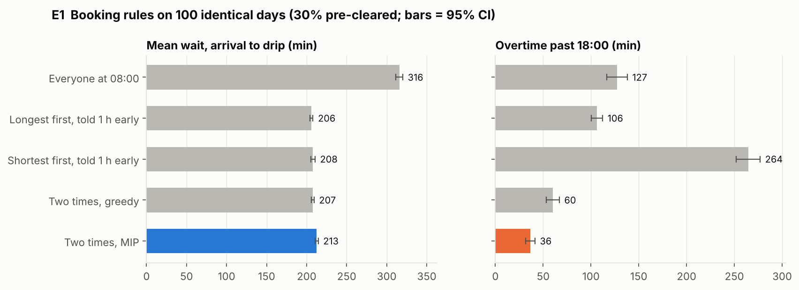
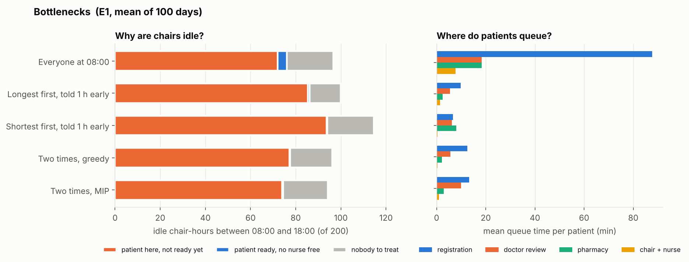
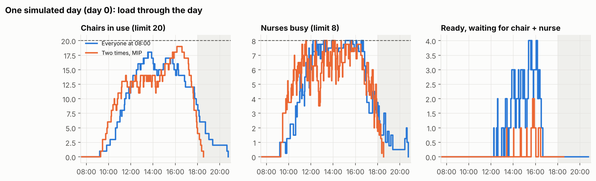
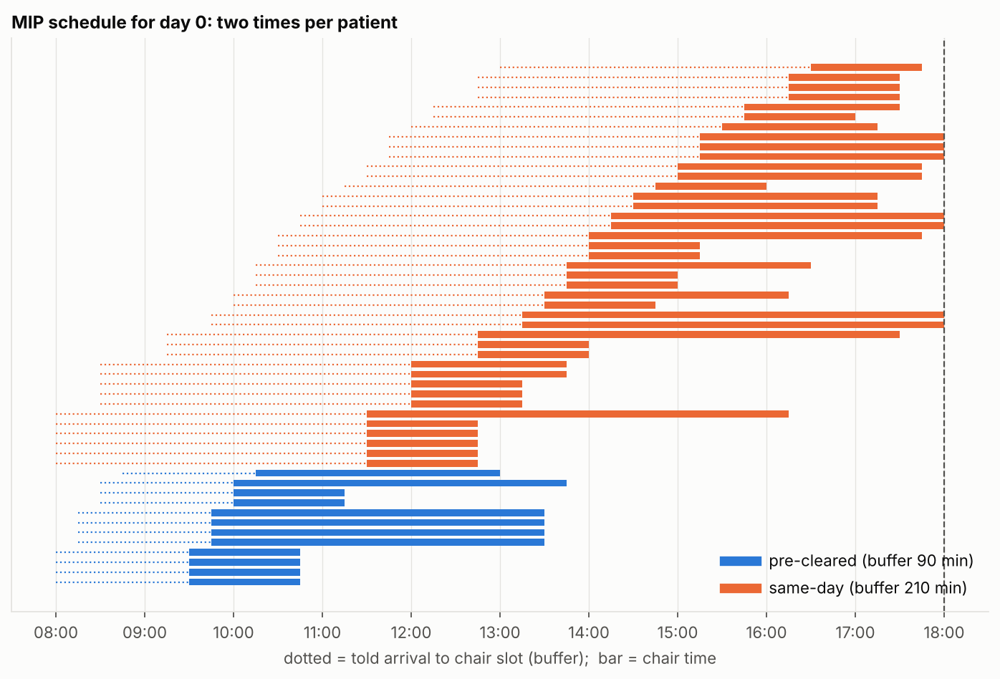
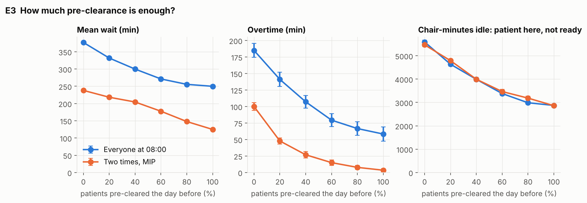
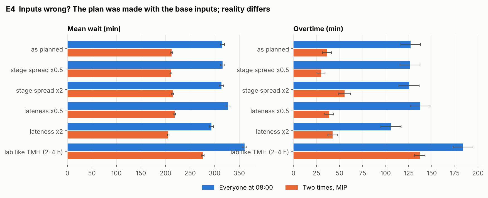
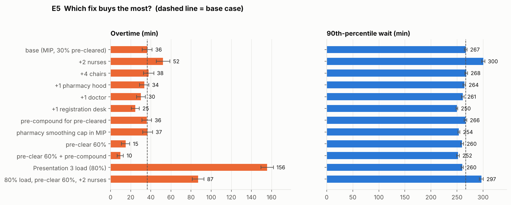
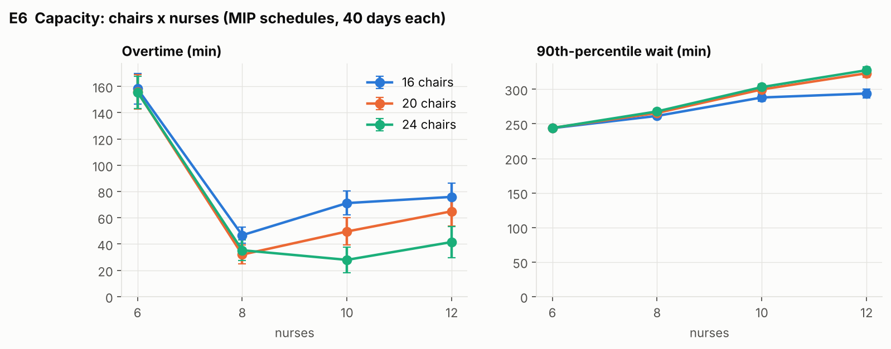

What we built after the Tata Memorial visit: a synthetic dataset traced to published sources, a simulation of the 10-step flow, an integer programme that sets two times for every patient, and the checks that each part does what it claims.
Code, data and figures are in the ie301-chemo/ folder on branch claude/busy-pascal-b1i9cm.
Every patient is drawn first, and then every stage time is drawn for that patient. Each day has its own seed, so every booking rule is tested on exactly the same days (common random numbers). The class is set by comparing one stored random number with the pre-cleared share, so changing that share changes nothing else about the day.
Patients are added until the planned chair time fills 60% of the 20 chairs × 10 hours. Planned chair time is setup plus planned infusion plus takedown.
| Item | Value | Note |
|---|---|---|
| Days | 100 | seed 301; byte-identical when regenerated |
| Booked patients | 5,007 | 50.1 per day (min 39, max 60, SD 4.1) |
| Same-day / pre-cleared | 3,593 / 1,414 | 28.2% pre-cleared (target 30%) |
| Found unfit at review | 384 | 7.7% (target 8%) |
| Of those, pre-cleared and known the day before | 110 | their slots are released a day early |
| No-shows | 269 | 5.4% (target 5%) |
| Planned infusion, mean | 105.5 min | 30: 2,250 · 60: 265 · 120: 898 · 180: 926 · 240: 585 · 360: 83 |
| Actual infusion, mean | 107.0 min | 27–385 min; MAPE vs planned 10.3% |
| Input | Distribution (minutes) | Source | Status |
|---|---|---|---|
| Arrival deviation from told time | Tri(−30, 0, 30) | Presentation 3; punctuality studies (84–91% arrive early) | Placeholder |
| Registration | Tri(5, 10, 15) | Presentation 3, flow confirmed at TMH | Assumed |
| Blood draw | Tri(5, 7.5, 10) | Presentation 3 | Assumed |
| Lab result | Tri(60, 90, 120) | Presentation 3; TMH states 4 h for a hemogram (test scenario) | Assumed |
| Doctor review | Tri(10, 15, 20) | Presentation 3 | Assumed |
| Billing / scheme approval | Tri(30, 45, 60) | Presentation 3 | Assumed |
| Pharmacy preparation | Tri(15, 22.5, 30) | Presentation 3; 17–27 min lead time (EJHP); 7–14 min compounding | Assumed |
| Line + pre-meds (nurse 1:1) | Tri(20, 30, 40) | Presentation 3; Hesaraki 2019 | Assumed |
| Takedown (nurse 1:1) | Tri(5, 10, 15) | Athawale 2015: nurse load peaks at the start and end | Assumed |
| Discharge (chair already free) | Tri(15, 22.5, 30) | Presentation 2 | Assumed |
| Planned infusion mix | 30: 45.5% · 60: 5.5% · 120: 18.2% · 180: 18.2% · 240: 10.9% · 360: 1.8% | one real clinic day, n = 55 (PMC6550030); Liang 2015 also reports ~45% at 30 min | Borrowed |
| Actual ÷ planned infusion | ≤60: Tri(0.9, 1.0, 1.6) · mid: Tri(0.85, 1.0, 1.2) · ≥240: Tri(0.75, 0.95, 1.1) | Hacettepe (short ones run long, long ones finish early; MAPE 16.9%); Bath; Mayo | Assumed |
| Unfit at review | 8% | NCT00883181 (~8% of cycles delayed); PMC2360274 | Borrowed |
| No-show | 5% | below the 9.5% (neurology) and 20% (Kaggle) general-clinic figures | Assumed |
| Pre-cleared share | 30% (varied 0–100%) | Kochi telephone triage; TMH visit | Assumed |
20 chairs · 8 nurses · one nurse sets up 1 patient or monitors 4 · 2 registration desks · 2 doctors · 3 pharmacy hoods · open 08:00–18:00 · bookings fill 60% of chair-hours.
Presentation 3 assumed 80% load. The simulation shows that 80% is infeasible: same-day patients cannot be ready before about 11:30, so overtime stays above 2 hours under every rule, even with 10 nurses. The base case is therefore 60%. 80% stays in as a stress test.
| Check | Result | Detail |
|---|---|---|
| Every stage: inside its bounds, mean on target, Kolmogorov–Smirnov test vs its triangular | 10 / 10 PASS | e.g. lab mean 90.06 vs 90.00, KS p = 0.34 |
| Infusion mix vs the published histogram | PASS | chi-square p = 0.49 |
| Infusion error direction, size, range | 3 / 3 PASS | short ×1.17, long ×0.94; MAPE 10.3% (lower than Hacettepe's 16.9%; E4 doubles the spread) |
| Unfit, no-show and pre-cleared rates (99.9% CI) | 3 / 3 PASS | 0.077 / 0.054 / 0.282 |
| Prior-day deferrals consistent | PASS | only pre-cleared and unfit |
| Daily booked chair-minutes | PASS | 7,200–7,590 vs target 7,200 |
| Reproducible from seed | PASS | identical MD5 on regeneration |
| Common random numbers across pre-cleared share | PASS | only the class changes |
| Presentation 3 buffers reproduced | PASS | pre-cleared 89.8 (slide: 89.9) · same-day 206.2 (slide: 206.2) |
| No-queue wait vs Kochi 3.5 h | PASS | sum of stage means = 220 min (3.67 h) |
Files: data/synthetic_patients.csv (one row per patient, all stage times), data/parameters.csv, data/infusion_mix.csv, docs/SOURCES.md (22 inputs, 6 validation targets, datasets checked).
These are the rules every schedule and every simulated day must obey.
| # | Constraint | In plain words | Where |
|---|---|---|---|
| C1 | Every patient gets exactly one chair slot | Nobody is left unbooked; overtime is allowed but penalised | MIP |
| C2 | Chairs in use ≤ K (20) at every 15-min slot | Setup, infusion and takedown all occupy the chair | MIP + sim |
| C3 | M × (patients in setup or takedown) + (patients on the drip) ≤ M × N | A nurse setting up or taking down is fully busy; otherwise one nurse watches 4 drips (Hesaraki 2019) | MIP + sim |
| C4 | Chair slot ≥ told arrival + Bc | The buffer: 90 min for pre-cleared, 210 min for same-day patients (q = 0.8) | MIP |
| C5 | Unit counts as open at slot τ only if it was open at τ − 1 | Makes makespan and overtime measurable inside the MIP | MIP |
| C6 (optional) | Chair starts per 30 min ≤ ⌊3 hoods × 30 / 22.5⌋ = 4 | Pharmacy smoothing; tested as a variant | MIP |
| C7 | Desks, doctors and hoods serve one patient each at a time | Queues form when they are busy | sim |
| C8 | Drug before chair; doctor clearance before drug (same-day) | The order of the 10-step flow | sim |
| C9 | Takedowns get nurses before new setups | Finished patients are released first | sim |
| C10 | A ready patient may start before their slot if a chair and nurse are free | Presentation 3 slide 9 "ready early" rule | sim |
Three levels, solved in the order the decisions are made. The simulation scores the result.
Level 1 Capacity chairs K, nurses N grid search, scored by simulation (E6)
Level 2 Booking rule buffer B_c = F_c⁻¹(q) chance constraint (newsvendor) (E2, E3)
Level 3 Daily slots chair slot s_i per patient time-indexed integer programme (solved each day)
─────────────────────────────────────────────────────────────────────────────────────────
Evaluation simulated day, 100 seeded days, 95% confidence intervals
ai is the arrival time told to the patient. si is the chair slot. Di is the random delay from told arrival to drug ready.
The buffer is a newsvendor quantile. If one idle chair-minute costs cidle and one patient waiting-minute costs cwait, the best q is cidle / (cidle + cwait). So choosing q is choosing how much an empty chair matters compared with a waiting patient.
The grid has 15-minute slots t = 0 … T−1 from 08:00, with closing at slot Tc (18:00) and 4 hours of possible overtime after it.
Patients with the same class, planned infusion and release are interchangeable. They form a group g of size ng, needing Lg chair slots: 2 for setup, the infusion, and 1 for takedown.
The nurse load of a group-g patient in their k-th chair slot is ωg,k: M during setup and takedown, 1 during infusion.
Solving.
Brute-force search: on small instances, every possible combination of start times is enumerated, the infeasible ones are discarded, and the best objective is recorded. The MIP must find the same optimum. The instances have 4 patients, 2 chairs, 2 nurses (M = 4), a 2-hour day plus 2 hours of overtime, and same-day patients released 30 min later.
| Instance | Patients (class, planned min) | Schedules enumerated | Feasible | Brute-force best | MIP | Match |
|---|---|---|---|---|---|---|
| 1 | P60, P60, S120, P30 | 4,800 | 12 | 378 | 378 | exact |
| 2 | P60, P30, P60, S30 | 12,000 | 1,247 | 208 | 208 | exact |
| 3 | S120, S60, S30, S60 | 2,560 | 0 | infeasible | infeasible | agree |
| 4 | P120, S30, S60, P120 | 2,880 | 0 | infeasible | infeasible | agree |
| 5 | P120, S120, P120, S60 | 1,152 | 0 | infeasible | infeasible | agree |
| 6 | S30, S60, P120, P60 | 4,800 | 7 | 384 | 384 | exact |
6 of 6 agree. Three instances are infeasible: in a 4-hour window the nurse limit leaves no room for all four patients, and the MIP proves that correctly. The brute force takes 0.2–1.4 s per instance and the MIP 0.02–0.04 s. Brute force cannot handle a real day: with 50 patients and about 40 start times each, there are roughly 4050 combinations.
| Other checks on real days (20 days) | Result | Detail |
|---|---|---|
| Independent code re-checks every MIP schedule against C1–C5 | PASS | 20 / 20 feasible; chairs ≤ 20, nurse units ≤ 32 |
| MIP objective ≤ greedy objective | PASS | 20 / 20; greedy is 48% worse on average (max 70%) |
| Planned overtime | PASS | 11 min (MIP) vs 76 min (greedy) |
| Solve time | PASS | mean 6.9 s, max 15.2 s per day |
The simulation plays out one day: arrive → register (desk) → [same-day: blood draw → lab → doctor review, unfit go home] → billing → pharmacy (hood) → wait for chair + nurse → line/pre-meds → infusion → takedown → discharge. Every stage time comes from the dataset row, so the same day replays exactly.
| Check | Result | Detail |
|---|---|---|
| Hand calculation, one patient per class | 2 / 2 PASS | infusion starts 700.0 and 587.5, exactly as calculated by hand |
| Capacity never exceeded (80 days × 4 rules) | PASS | 0 violations |
| Patients conserved; timestamps in order | 2 / 2 PASS | booked = treated + unfit + no-show |
| Little's law; chair-minutes balance | 2 / 2 PASS | differences below 4 × 10−12 |
| Hesaraki nurse rule at every minute (N = 2) | PASS | max 8 ≤ M·N = 8 |
| Unlimited capacity reproduces slide 7 | PASS | 80th percentile 90.2 (89.9) and 206.4 (206.2) |
| Same input, same output | PASS | deterministic replay |
| Validation against Indian figures | Model | Published | Verdict |
|---|---|---|---|
| Wait, 0% pre-cleared, appointments told 1 h early | 4.11 h | Kochi 3.5 h | within 20% |
| Wait, 0% pre-cleared, everyone told 08:00 | 6.28 h | Kochi 3.5 h | above: registration queue 90 min, doctor queue 56 min |
| Time in unit, appointments | 6.47 h | 5 h 40 (SD 3 h 42) | within 20% |
| Morning chair-hours lost to "patient here, not ready" | 37% | Presentation 3: 35% | match |
The stage times alone add up to 3.67 h before any queue. Kochi's 3.5 h therefore fits the stage times. "Everyone at 08:00" overshoots because of the morning crush at registration and at the doctors. We report that as it is and did not tune the model to hit 3.5 h.
| Rule | Mean wait (min) | P90 wait | Same-day wait | Pre-cleared wait | Overtime (min) | Registration queue | Doctor queue |
|---|---|---|---|---|---|---|---|
| Everyone at 08:00 | 316 ± 4 | 452 | 358 | 206 | 127 ± 11 | 88 | 18 |
| Longest first, told 1 h early | 206 ± 2 | 266 | 239 | 122 | 106 ± 6 | 10 | 6 |
| Shortest first, told 1 h early | 208 ± 3 | 266 | 242 | 121 | 264 ± 13 | 7 | 6 |
| Two times, greedy | 208 ± 2 | 262 | 238 | 128 | 60 ± 7 | 13 | 6 |
| Two times, MIP | 213 ± 2 | 267 | 245 | 129 | 37 ± 5 | 13 | 10 |

| Coverage q | Buffers P / S (min) | Mean wait | Overtime | Patient late for own slot |
|---|---|---|---|---|
| 0.50 | 75 / 195 | 212.4 | 39.8 | 20.2 |
| 0.65 | 90 / 210 | 212.5 | 36.5 | 13.1 |
| 0.80 | 90 / 210 | 212.5 | 36.5 | 13.1 |
| 0.95 | 105 / 225 | 212.3 | 34.8 | 6.1 |
The result is flat. Patients who are ready early may start early (C10), so the schedule absorbs a wrong buffer. A larger buffer mainly makes patients less late for their own slot. q = 0.65 and 0.80 round to the same 15-minute buffers.



| Pre-cleared the day before | Wait, 08:00 rule | Wait, MIP | P90 wait, MIP | Overtime, 08:00 rule | Overtime, MIP | Chair-hours lost to "not ready" |
|---|---|---|---|---|---|---|
| 0% | 377 | 238 | 263 | 185 | 100 | 91 |
| 20% | 332 | 218 | 263 | 141 | 48 | 80 |
| 40% | 300 | 204 | 268 | 107 | 27 | 67 |
| 60% | 271 | 178 | 260 | 79 | 15 | 58 |
| 80% | 256 | 148 | 229 | 67 | 8 | 53 |
| 100% | 250 | 125 | 142 | 58 | 3.5 | 48 |

The plan is made with the base inputs, but the simulated days use different ones. This tests what happens when our assumptions about Indian stage times are wrong.
| Reality differs from plan | Wait, 08:00 rule | Wait, MIP | Overtime, 08:00 rule | Overtime, MIP |
|---|---|---|---|---|
| As planned | 316 | 213 | 127 | 37 |
| Stage-time spread halved | 316 | 211 | 126 | 30 |
| Stage-time spread doubled | 314 | 214 | 125 | 55 |
| Lateness halved | 327 | 219 | 138 | 39 |
| Lateness doubled | 294 | 206 | 106 | 42 |
| Lab takes 2–4 h (TMH hemogram) | 361 | 276 | 184 | 137 |

| Change (MIP schedule, 30% pre-cleared unless stated) | Mean wait | P90 wait | Overtime | Effect |
|---|---|---|---|---|
| Base | 213 | 267 | 37 | |
| Pre-clear 60% + pre-compound drugs for them | 157 | 252 | 10 | best |
| Pre-clear 60% | 178 | 260 | 15 | large |
| +1 registration desk | 201 | 250 | 25 | best single resource |
| +1 doctor | 209 | 261 | 30 | small |
| Pharmacy smoothing cap (C6) | 203 | 254 | 37 | wait only |
| +1 pharmacy hood | 210 | 264 | 34 | none significant |
| Pre-compound only (30% pre-cleared) | 205 | 266 | 36 | wait only |
| +4 chairs | 214 | 268 | 38 | none |
| +2 nurses | 235 | 301 | 52 | worse; see below |
| Presentation 3 load (80%) | 207 | 260 | 156 | infeasible |
| 80% load + pre-clear 60% + 2 nurses | 202 | 297 | 87 | still 1.5 h overtime |

| Chairs \ Nurses | 6 | 8 | 10 | 12 |
|---|---|---|---|---|
| 16 | 158 / 244 | 47 / 261 | 71 / 288 | 76 / 294 |
| 20 | 156 / 244 | 32 / 266 | 50 / 300 | 65 / 323 |
| 24 | 156 / 244 | 35 / 268 | 28 / 303 | 42 / 328 |
Each cell shows overtime / 90th-percentile wait, in minutes.

Running. C7 caps told arrivals per 15 minutes at what the registration desks (3 per 15 min) and doctors (2 same-day per 15 min) can serve. E7 reruns the E5 fixes and the E6 grid with it. This section will be filled in when it finishes.
| What | Path in ie301-chemo/ |
|---|---|
| Dataset and parameters | data/synthetic_patients.csv · data/parameters.csv · data/infusion_mix.csv |
| Sources | docs/SOURCES.md |
| Formulation | docs/FORMULATION.md · chemo/mip.py |
| Simulation | chemo/sim.py |
| Verification reports | results/verify_data.md · results/verify_sim.md · results/verify_mip.md · results/bruteforce_check.csv |
| Experiment results | results/E*_summary.csv (means and CIs) · results/E*_days.csv (per day) |
| AnyLogic | anylogic/ANYLOGIC_BUILD_GUIDE.md · data/anylogic_inputs.xlsx (after the experiments finish) |